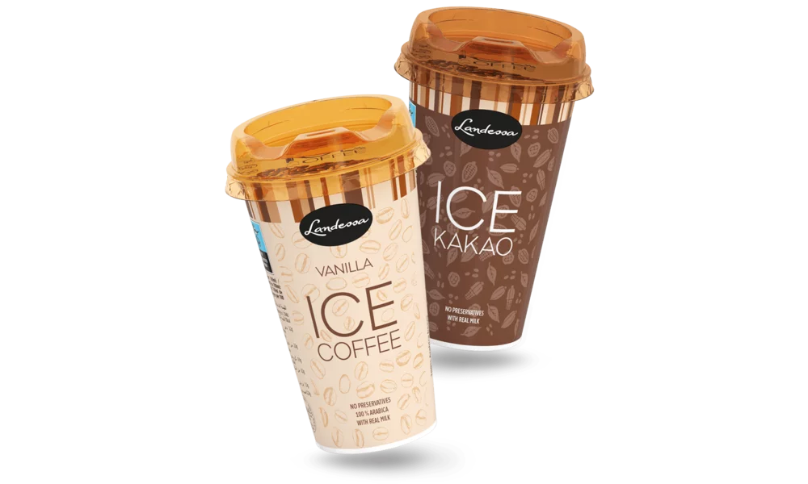

Taste the Feeling
Landessa Ice Coffee is being prepared based on Arabica coffee beans. Arabica is a synonym of best quality coffee – delicate and charming in its chocolate taste. Landessa – mix of Arabica and fresh, creamy milk, unforgettable taste. Landessa Ice Coffee perfectly refreshes and energizes using its natural coffee power.
Ennstal Milch – the manufacturer of Landessa it is an organization established by farmers who run its cattle breeding on a traditional manner with no artificial fodder no GMO. Landessa Ice Coffee is in one of the most enviroment – friendly packages. Raw materials for the productions comes mainly from renewable sources.
Learn More
